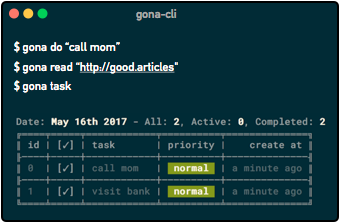
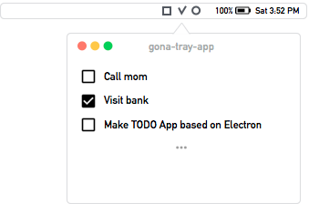

Do you gonna do something?
Tasks, Meetings, Alarm and Articles...
Gona: CLI(Command Line Interface) and GUI
Need help getting started?
할일을 너무 복잡하게 만들지 마세요.
그것은 오늘 할일을 집중하지 못하게 해요.
딱 5개만 등록하고 그일을 마치고 나면 그때 다시 생각하세요.
당신이 오늘 5개의 할일을 마치는 것 만으로 충분한 하루를 보낸거에요.
조금 느리게 걸어요.
세상이 당신에게 발을 맞출 수 있게...
Need help getting started?
Gona is dead simple to manage TODO. If you want to learn more, just visit the help!
View Tutorial Videos